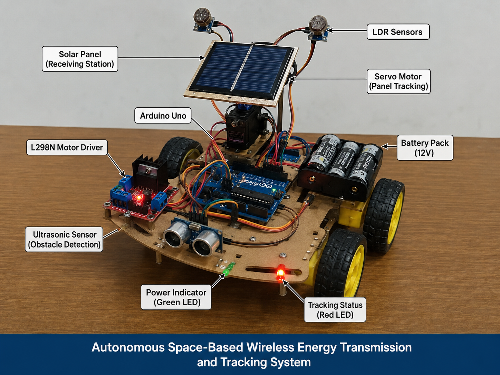

Autonomous Solar Tracking & Receiving System
Def-Space Summer Internship — Bharat Space Education Research Centre (BSERC), India — Jun 2026 – Aug 2026

Important note on scope
The project originated as a student concept during an internship lasting more than six weeks. The physical hardware prototype was developed later, using a microcontroller and commercially available sensors to demonstrate the underlying concept. It was an educational proof-of-concept intended to explore the engineering principles and practical feasibility of the idea, not a functional or space-deployed system.
The problem I was trying to solve
Solar panels and light-receiving systems lose efficiency when they're fixed in place, because the angle between the panel and the light source keeps changing. The problem I explored was: can a small, low-cost system automatically detect the direction of the strongest light and physically turn a panel or receiver to face it, without a person adjusting it manually?
Why this is relevant to space technology
The idea of transmitting solar power wirelessly from space to Earth — Space-Based Solar Power (SBSP) — depends on a receiving station on the ground (or another satellite) staying accurately aligned with the incoming energy beam. My project doesn't replicate SBSP itself; it borrows the core alignment problem — automatically finding and tracking a light/energy source — and solves a small, hands-on version of it using sensors and a servo motor. It's a way of engaging with a space-technology concept at a scale that's actually buildable as a student.
How the system works
Two or more Light Dependent Resistors (LDRs) are positioned around the panel/receiver to sense light intensity from different directions. The Arduino continuously reads the light levels from each LDR and compares them. When the readings are uneven, it means the strongest light isn't hitting the receiver straight-on, so the Arduino sends a signal to a servo motor to rotate the panel toward the LDR that is reading the most light. This repeats continuously, so the system keeps nudging itself back toward alignment as the light source (or the light angle) changes — an automatic, closed-loop tracking behaviour rather than a one-time manual adjustment.
Components & their role
What I learned
- Reading and interpreting analog sensor data (LDRs) with Arduino.
- Writing control logic that turns sensor comparisons into motor movement.
- Basic embedded systems and robotics concepts: sensing → decision → actuation.
- How a real space-technology concept (Space-Based Solar Power) can be explored through a small, buildable analogy.
Challenges encountered
- Getting stable, noise-free readings from LDR sensors under changing light conditions.
- Tuning how sensitive the system should be, so it tracks light without jittering back and forth.
- Calibrating the servo motor's range and response to sensor differences.
Future improvements
- Adding more LDR sensors for finer directional accuracy (e.g. a 2-axis tracking grid).
- Logging light intensity and panel angle data over time to evaluate tracking performance.
- Comparing energy captured with tracking on vs. off, to quantify the benefit.
- Exploring a more robust alignment method beyond simple LDR comparison.